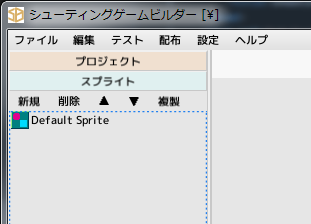
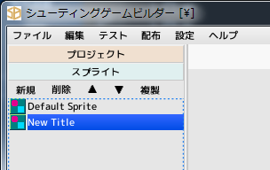
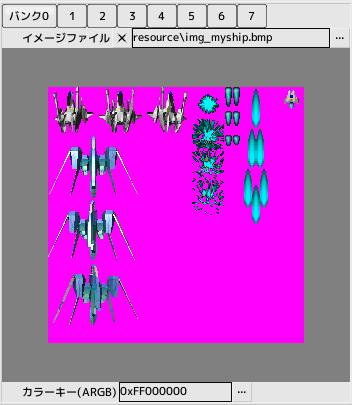
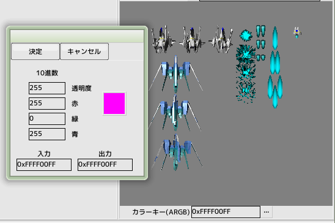
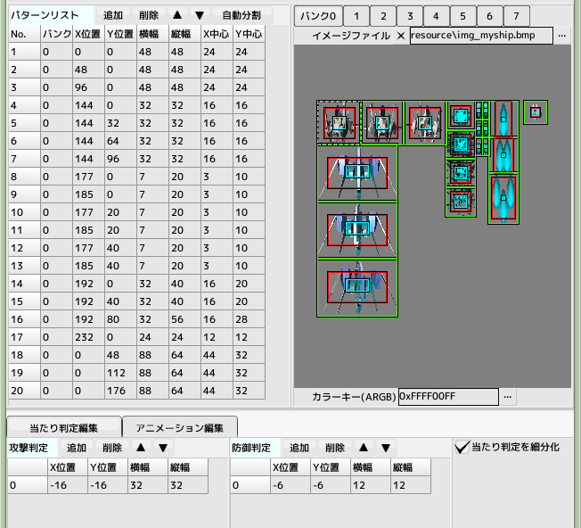

■元のページへ戻る
■元のページへ戻る

1.スプライトを作成する
なにがしかの画像を表示する際に必ず作成しなくてはいけないパーツがスプライトとなります
まずは自機の作成に必要なスプライトを作成していきます

スプライト新規作成
前回のチュートリアルで作成したプロジェクトファイルを開き、左側のスプライトをクリックします
そして新規ボタンを押してスプライトを作成します。リストの中に'New Title'が現れるのでそれをダブルクリックして開きます
開いたウインドウがスプライト編集ウインドウになります
名前欄の'New Title'をわかりやすい名前に変更します(ここでは'MYSHIP'とします)

イメージファイルの登録
イメージファイルと書かれたエディットボックスの右側にある...ボタンをクリックし
チュートリアルフォルダの'resource/img_myship.bmp'を選択します
この時、バンクと書かれたボタンは0が選択された状態になっています
イメージファイルを登録すると、その下にプレビューが表示されます
複数のイメージファイルを登録する場合はバンクを切り替えてから...をクリックしてください
イメージファイルを登録してもプレビューが表示されない場合は非対応フォーマットになります

カラーキーの設定
イメージのピンク色の部分は透明色でなければならないのでカラーキーにその色を指定します
カラーキーに0xFFFF00FFと直接入力するか...をクリックしてカラーダイアログで透明色にしたい色のARGB値を入力します
背景色は灰色になっていますがエディタ設定で変更することが可能です

パターンリスト作成
イメージからパターンを切り出します
パターンを追加した時、当たり判定も同時に一つ追加されています
すべてのパターンと当たり判定を入力してください
プレビュー内の色
緑枠...パターンサイズ
青枠...防御判定サイズ
赤枠...攻撃判定サイズ
XY中心は回転拡大縮小時の中心位置となります
ここまでの内容を保存しておいてください
自機を表示するための準備ができました
次のチュートリアルへ進んでください
■ページ上部へ戻る